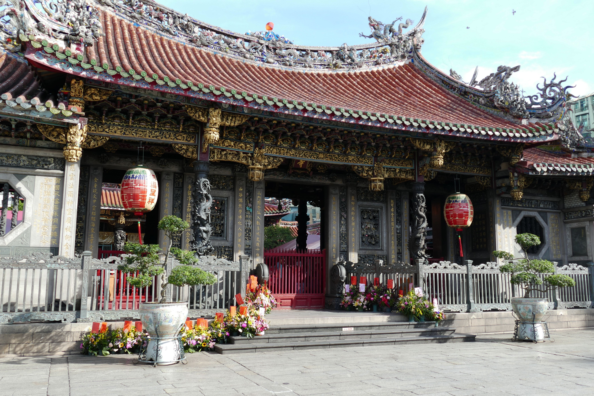
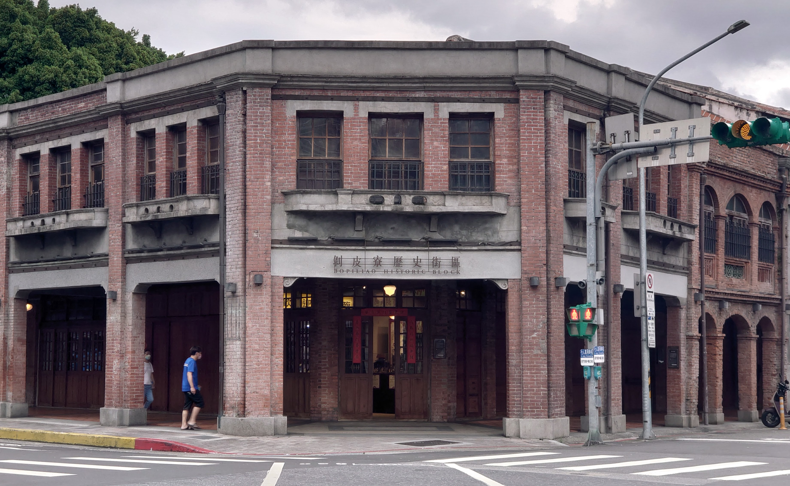
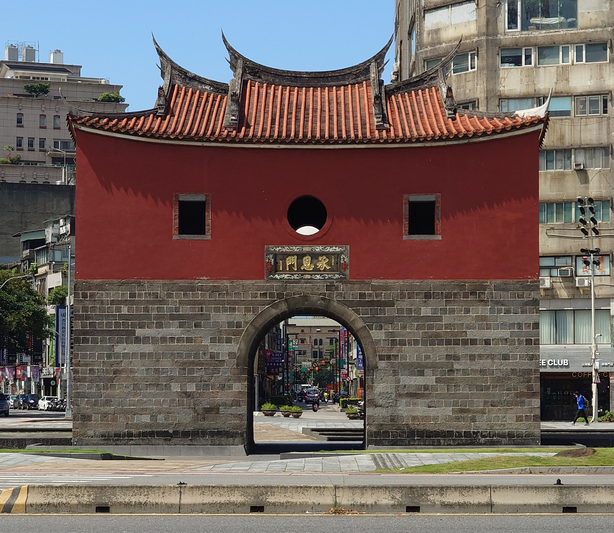

艋舺龍山寺
建於乾隆三年 (1738年)，是台北市香火最鼎盛的廟宇之一。建築形式為典型的「三進四合院」，展現了台灣傳統寺廟之美。來到這裡，別忘了求個平安符。
台北建城已超過 130 年，從清代、日治時期到民國，留下了許多珍貴的文化資產。

建於乾隆三年 (1738年)，是台北市香火最鼎盛的廟宇之一。建築形式為典型的「三進四合院」，展現了台灣傳統寺廟之美。來到這裡，別忘了求個平安符。

位於龍山寺旁，保留了清代街道的風貌與日治時期的紅磚建築。這裡是電影《艋舺》的取景地，現在經常舉辦藝文展覽，是拍照打卡的好去處。

台北府城五大城門中唯一保留原貌的城門，見證了台北城的變遷。周邊經過整修後成為廣闊的廣場，非常適合散步與欣賞古蹟建築。